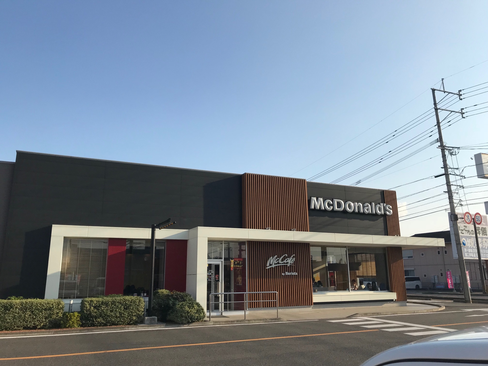

第1位 McDonald's

アンケートに答えてくれたほとんどの学生が、「マクドナルド」と回答していました・・・！私自身もマクドナルドに行ったら、必ずと言っていいほど知り合いに会います（笑）

みなさん、宇佐市民について知りたくないですか？！
宇佐市民の学生が頻繁にいく場所、好きなからあげ屋さん…ってどこなんでしょうか？
32人の地元の高校生に協力してもらいました！
アンケートに答えてくれたほとんどの学生が、「マクドナルド」と回答していました・・・！私自身もマクドナルドに行ったら、必ずと言っていいほど知り合いに会います（笑）
マックもジョイフルも、いろいろな高校や中学の近くでみんな寄りやすいから人と会うのかもしれませんね！あと、基本的に低価格だからですかね～
私は、ジョイフルに行ったら必ず主食→デザート→ポテトの順で食べます！こんなに食べてもお会計は1000円少しで収まります！
本当にありがたいです(*´ω｀)
3位は図書館！休日に図書館に行くとだいたい知り合いがいます！
宇佐市民図書館は玄関ホールにカフェスペースがあって、おしゃれなんですよ～
そして座り心地の良い椅子や、勉強しやすい、本が読みやすい空間が確保されていて居心地がとても良いです。